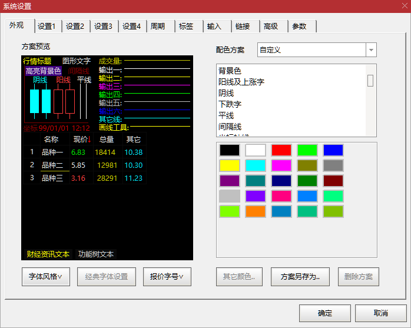
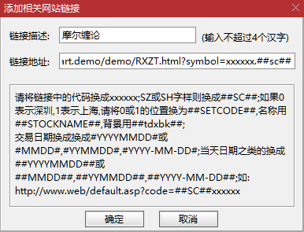
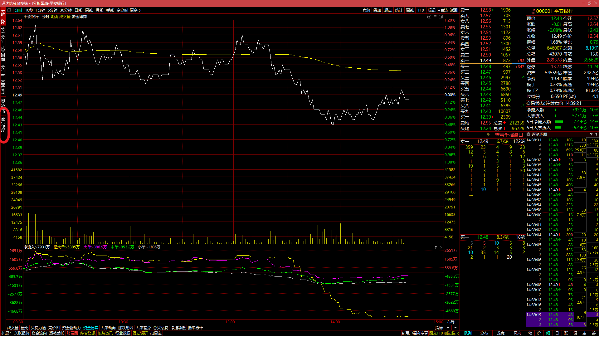
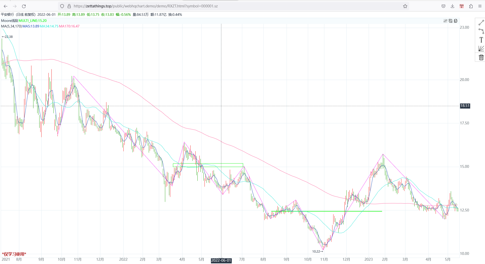

通过通达信「外部链接」功能，直接在软件内一键打开本站的缠论K线图。
打开通达信，菜单栏选择 选项 → 系统设置 (或按快捷键 Ctrl + D)

点击顶部标签 「链接」 → 点击右下角 「添加」 按钮

链接描述： 输入任意名称，例如 摩尔缠论
链接地址： 填入以下内容（支持通达信变量 ##sc## 自动代入当前股票代码）
✅ 其中 xxxxxx 部分替换为 000001 即可，通达信会自动将 ##sc## 转换为当前股票代码。
点击确定保存。然后在任意个股的 分时图界面，右侧侧边栏会出现「摩尔缠论」按钮，点击即可在浏览器中打开本站线段中枢图。


img/ 目录下存在对应截图文件。